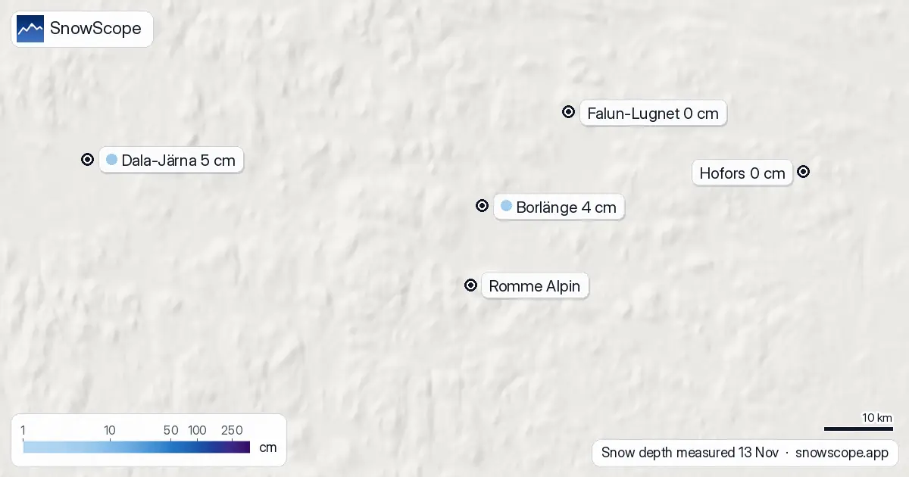

Romme Alpinin lumi: Borlängessä muutama sentti, lumitykit ennen rinteitä (14. marraskuuta 2026)
Romme on matala mäki Borlängen lähellä, 141 metristä 406 metriin, ja se elää pääosin tykkilumella. Aamulla 13. marraskuuta 12 km:n päässä 146 metrissä oleva Borlängen sääasema mittasi 4 cm, kun maa oli edellisenä päivänä paljas. Ludvikassa, 206 metrissä, lunta oli 10 cm; Falunissa, 161 metrissä, ei vieläkään mitään. Keskuksen mukaan lumetustiimi on jo töissä, ja kausi alkaa 19. joulukuuta.
Katso kohteen Romme Alpin lumiennuste reaaliajassa SnowScope-sovelluksessaLumensyvyys, puuterihälytykset ja 3D-kartta, ilmaiseksi.
Laikukas ensimmäinen lumipeite
12. ja 13. marraskuuta satanut lumi jakautui epätasaisesti: lännessä Ludvikassa 10 cm, Falunin pohjoispuolella Bjursåsissa 7 cm, Borlängessä 4 cm ja Falunissa ei lainkaan. Tällainen laikukkuus on tällä korkeudella ensilumelle normaalia: muutama metri korkeutta, vähän tuulta tai läheinen kaupunki ratkaisee, jääkö lumi maahan.
Arviomme mukaan viimeisen seitsemän päivän aikana uutta lunta on tullut noin 8 cm mäen huipulle ja 5 cm alaosaan.

Tällä viikolla sadetta
Ennusteemme seuraaville seitsemälle päivälle on lähes nolla lunta. Muut tarkistamamme ennusteet antavat huipulle enintään 1–7 cm, ja ne ovat yhtä mieltä siitä, että suurin osa sademäärästä tulee vetenä: noin 85 % alaosassa ja 70 % huipulla. Lumiraja nousee noin 640 metriin, koko mäkeä korkeammalle. Tämänpäiväinen ohut lumipeite todennäköisesti katoaa.
Miksi Romme luottaa lumitykkeihin
46 mennyttä talveamme näyttävät, kuinka vähän luonnonlunta tällä mäellä yleensä on alkutalvesta: tavallinen lumensyvyys on 14. marraskuuta 1 cm, 30. marraskuuta 6 cm ja 15. joulukuuta 10 cm. 41 %:na talvista 14. marraskuuta ei ole lainkaan luonnonlunta.
Suuntaus on sama. Luonnonlumen keskimääräinen maksimi oli ensimmäisten 15 talven aikana 49 cm ja viimeisten 15 talven aikana 34 cm, ja lumipäivät vähenivät 136:sta 97:ään. Siksi avaus riippuu lumetukseen tarvittavista kylmistä öistä eikä lumisateesta.
Milloin Romme avautuu?
Keskuksen aukioloaikasivun mukaan rinteet ja hissit ovat auki 19. joulukuuta – 4. huhtikuuta päivittäin. Vuotta ei mainita päivämäärien yhteydessä; kyseessä on kausi 2026/27.
Vinkkejä laskijoille
- Rommen ympäristön metsien luonnonlumi ei todennäköisesti kestä tätä viikkoa; älä suunnittele hiihtoretkeä sen varaan.
- Lumetus vaatii kylmiä ja kuivia öitä. Tällainen leuto jakso voi siirtää töitä päivillä.
- Seuraa keskuksen 'Romme idag' -sivua todellisen avaustilanteen osalta.
Lisää karttoja (ulkoiset sivustot)
Lähteet ja tekijät
- SMHI, avoin data: päivittäinen lumensyvyys Ruotsin sääasemilla www.smhi.se/data/meteorologi/ladda-ner-meteorologiska-observationer
- Romme Alpin, virallinen sivusto: avauspäivät ja hissitilanne, luettu 13.11.2026 www.rommealpin.se/sv/om-oss/oppettider
- Romme Alpin, Romme idag (virallinen tilanne) www.rommealpin.se/sv/romme-idag
Näistä luvuista
Mitattu lumi: aamulukemat 13. marraskuuta 2026 Ruotsin (SMHI:n avoin data), Suomen (Ilmatieteen laitoksen avoin data, CC BY 4.0) ja Norjan (MET Norwayn asemaraportit, CC BY 4.0, julkaisija Ogimet) virallisilta sääasemilta. Norjan kansallinen lumikartta seNorge (NVE ja MET Norway, NLOD) antaa rinteille arviot 1 km:n ruudukossa. Omat lukumme: SnowScopen ennuste seuraaville seitsemälle päivälle hiihtokeskuksen kolmella korkeudella, verrattuna riippumattomiin ennusteisiin (ECMWF, ICON, GFS, GEM) ajalle 14.–20. marraskuuta; 46 menneen talven lumihistoria (1980-81–2025-26), korkeuden mukaan korjattu menneisyyden malli. Avauspäivät: hiihtokeskusten omat sivut, luettu 13.11.2026. Rinteiden pituus ja hissien määrä: OpenSkiMap-kartoitus.
Viralliset lumivyöryennusteet: Lavinprognoser (Naturvårdsverket)
Viittaa tähän raporttiin
Tutkimukseen, opetukseen tai mediaan: luvut ja kaaviot ovat vapaasti käytettävissä CC BY 4.0 -lisenssillä tällä lähdeviitteellä.
SnowScope (2026), Romme Alpinin lumi: Borlängessä muutama sentti, lumitykit ennen rinteitä (14. marraskuuta 2026), https://snowscope.app/blog/fi/2026/11/romme-alpin-snow-14-november-2026.html, luettu 2026-11-14
SnowScope (Atlas Labs). (2026, November 14). Romme Alpinin lumi: Borlängessä muutama sentti, lumitykit ennen rinteitä (14. marraskuuta 2026). SnowScope snow reports. https://snowscope.app/blog/fi/2026/11/romme-alpin-snow-14-november-2026.html
BibTeX
@misc{snowscope2026rommealpinsnow14november,
author = {{SnowScope (Atlas Labs)}},
title = {Romme Alpinin lumi: Borlängessä muutama sentti, lumitykit ennen rinteitä (14. marraskuuta 2026)},
year = {2026},
month = nov,
howpublished = {\url{https://snowscope.app/blog/fi/2026/11/romme-alpin-snow-14-november-2026.html}},
note = {Published 2026-11-14 21:09 UTC; accessed 2026-11-14}
}· CC BY 4.0 · Menetelmät, data ja työkalut →
Romme Alpin: lumi ja lämpötila korkeuden mukaan, tämä talvi ja viime talvi (työkalut) →
Seuraa: Romme Alpin
Ilmainen: viesti, kun uutta lunta on tulossa, ja ennuste joka aamu.
Lisää lumiraportteja

Tukholman koiranomistajat, 13. marraskuuta 2026: kaupungissa mitattu 0 cm lunta, lähin 2 cm on 75 km pohjoiseen. Missä koira saa juosta vapaana Tukholmassa, luonnonsuojelualueiden säännöt ja kuiva viikonloppuennuste.

Mitattu lumi Rovaniemellä 13. marraskuuta 2026: lentoasemalla 7 cm, Apukassa 8 cm. Lähellä tavallista marraskuun puoliväliä mutta vähän sen alle, ja edessä kylmä ja luminen viikonloppu.

Mitattu lumi Oulussa 13. marraskuuta 2026: Kaukovainiolla 7 cm, Hailuodossa 5 cm, Ruukissa 8 cm, kaikki torstain jälkeen satanutta. Vähän lisää tulossa ennen maanantain suojasäätä.